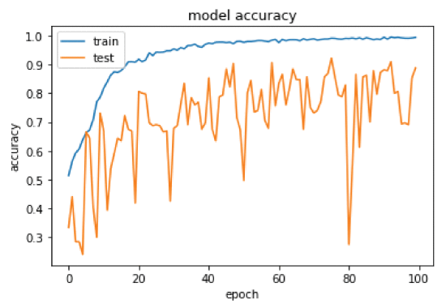

The Experiment is conducted using shanghai Tech dataset(v11) which contain 474 videos from 215 different crowded scenes. The size of the video is 360×640 pixels. 80% of the data is used for training, and 20% of the data is used for testing and validation. Since we it was doing classfication,Each video is classified as either low, medium or high-density class. Each video is divided into the number of video frames,did data labeling store the details in a CSV file. Later this CSV file used as data and helps the system to identify the frame sequence extracted from the same video. 477463 frames are created for the training dataset, and 13395 frames are created for the test data, and these frames are used for the crowd density estimation.
Experiment results provide around 75% accuracy for CNN and 98% accuracy for CNN(LSTM) model.
